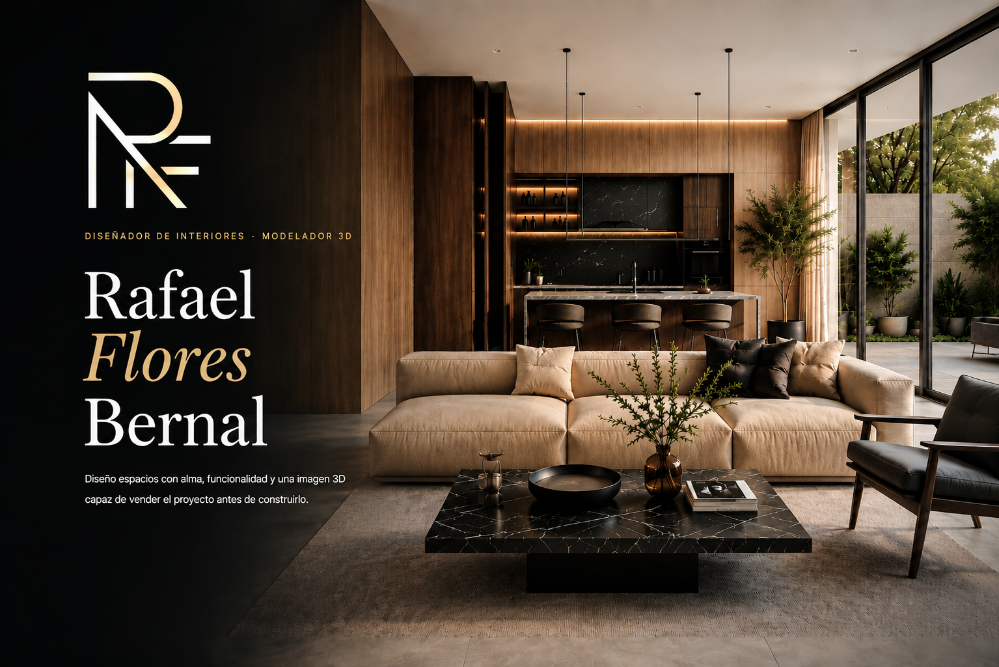
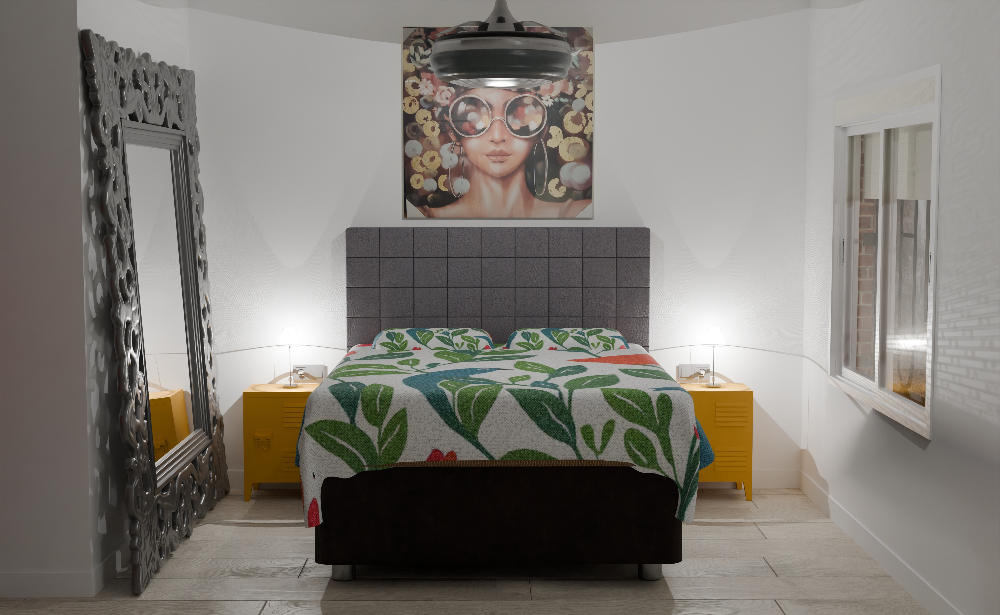
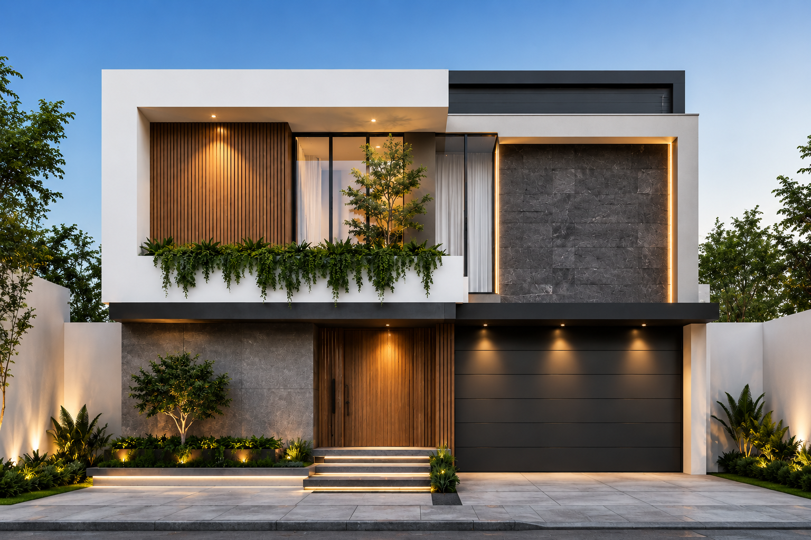
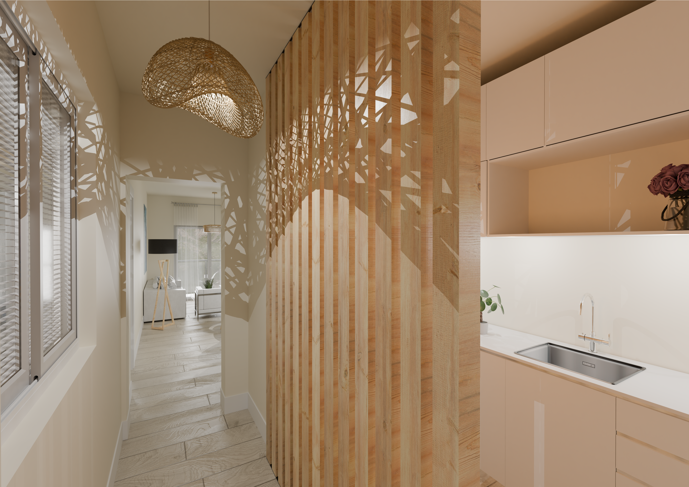

Diseño de interiores
Distribución, estilo, materiales, mobiliario, iluminación y concepto visual.

Ver proyectos →Sobre mí
Soy diseñador de interiores y modelador 3D especializado en crear espacios funcionales, elegantes y visualmente impactantes. Desarrollo propuestas de interiorismo, distribución, materiales, mobiliario y renders hiperrealistas para viviendas, locales y proyectos inmobiliarios.
Servicios
Distribución, estilo, materiales, mobiliario, iluminación y concepto visual.
Creación de espacios en 3D para visualizar el proyecto antes de ejecutarlo.
Imágenes profesionales para presentar, vender o promocionar proyectos.
Dossiers visuales para viviendas, promociones y propuestas comerciales.
Proyectos destacados

Reforma integral · Diseño interior · Renders

Modelado 3D · Fachada · Visualización

Interiorismo · Materiales · Iluminación
Contacto
Si necesitas diseño de interiores, modelado 3D o renders para presentar una idea, podemos convertirla en una imagen clara, elegante y profesional.
Contactar →